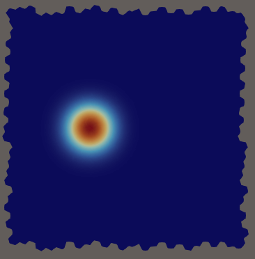
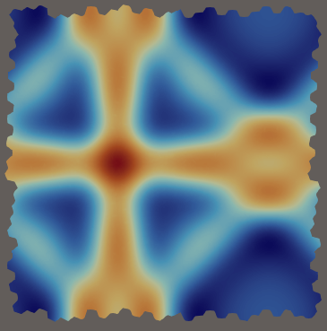

|
Vulpes
0.1.0
Versatile and parallel compUtational Library for high-order discontinuous Polytopal Element Simulations
|
|
Vulpes
0.1.0
Versatile and parallel compUtational Library for high-order discontinuous Polytopal Element Simulations
|
Author: Pedro Peixoto ppeix.nosp@m.oto@.nosp@m.usp.b.nosp@m.r
This tutorial describes the Discontinuous Galerkin (DG) solver for the linearised shallow water equations assembled in examples/assembly/shallow_water/swe_assembly.hpp.
The shallow water equations model the depth-averaged flow of a thin fluid layer. Linearising around a rest state of constant depth \(h_0\) and zero velocity gives the system
\[ \frac{\partial \mathbf{U}}{\partial t} + A_x \frac{\partial \mathbf{U}}{\partial x} + A_y \frac{\partial \mathbf{U}}{\partial y} = 0, \]
where the state vector \(\mathbf{U} = (h, u, v)^T\) collects the height perturbation \(h\) and the depth-averaged velocity components \(u\) and \(v\). The flux Jacobians are
\[ A_x = \begin{pmatrix} 0 & h_0 & 0 \\ g & 0 & 0 \\ 0 & 0 & 0 \end{pmatrix}, \qquad A_y = \begin{pmatrix} 0 & 0 & h_0 \\ 0 & 0 & 0 \\ g & 0 & 0 \end{pmatrix}, \]
where \(g\) is the gravitational acceleration. The system is symmetric hyperbolic with wave speed \(c = \sqrt{g h_0}\).
The component indices used throughout the code are
\[ 0 \leftrightarrow h, \qquad 1 \leftrightarrow u, \qquad 2 \leftrightarrow v. \]
The equations are solved on the biperiodic unit square \([0,1]^2\) with initial condition \(\mathbf{U}(0,x) = \mathbf{U}_0(x)\).
Let \(\mathcal{T}_h\) be a mesh and let
\[ \mathbf{V}_h = \{ \mathbf{v} \in (L^2(\Omega))^3 : \mathbf{v}|_K \in (\mathbb{P}_p(K))^3 \text{ for all } K \in \mathcal{T}_h \}. \]
Multiplying by a test function \(\mathbf{v} \in \mathbf{V}_h\) on each cell \(K\) and integrating by parts gives
\[ \int_K \mathbf{v} \cdot \frac{\partial \mathbf{U}}{\partial t}\,dK - \int_K \left( A_x \frac{\partial \mathbf{v}}{\partial x} + A_y \frac{\partial \mathbf{v}}{\partial y} \right) \cdot \mathbf{U}\,dK + \int_{\partial K} \mathbf{F}_{\mathrm{num}}(\mathbf{U}^-, \mathbf{U}^+, n) \cdot \mathbf{v}\,dS = 0, \]
where \(\mathbf{U}^-\) and \(\mathbf{U}^+\) denote the traces from the cell \(K\) and from the neighbouring cell across face \(e\), and \(n\) is the outward normal of \(K\). The volume integral is moved to the left-hand side of the advection matrix so that the semi-discrete system reads
\[ M \frac{d\mathbf{U}}{dt} = A \mathbf{U}, \]
where \(M\) is the block-diagonal mass matrix and \(A\) is the advection operator assembled from volume and face contributions.
For a linear hyperbolic system, the exact Godunov flux (exact Riemann solver) coincides with the upwind flux and with the Roe flux, since all three reduce to the same expression when the flux Jacobian is constant:
\[ \mathbf{F}_{\mathrm{num}}(\mathbf{U}^-, \mathbf{U}^+, n) = A^+(n)\,\mathbf{U}^- + A^-(n)\,\mathbf{U}^+, \]
where \(A^+(n) = \tfrac{1}{2}(A(n) + |A(n)|)\) and \(A^-(n) = \tfrac{1}{2}(A(n) - |A(n)|)\) are the positive and negative parts of the normal flux Jacobian. Rearranging gives the algebraically equivalent central + dissipation form:
\[ \mathbf{F}_{\mathrm{num}} = \underbrace{\frac{1}{2} A(n)\,(\mathbf{U}^- + \mathbf{U}^+)}_{\text{central}} + \underbrace{\frac{1}{2} |A(n)|\,(\mathbf{U}^- - \mathbf{U}^+)}_{\text{dissipation}}. \]
The central part uses the same 4 nonzero entries as the volume operator and the dissipation part has a simple closed form (Section 3.3), so no eigendecomposition is needed at runtime.
Combining the Jacobians with the normal \(n = (n_x, n_y)\):
\[ A(n) = n_x A_x + n_y A_y = \begin{pmatrix} 0 & h_0 n_x & h_0 n_y \\ g n_x & 0 & 0 \\ g n_y & 0 & 0 \end{pmatrix}. \]
This has 4 nonzero entries, corresponding to the blocks \((h,u)\), \((h,v)\), \((u,h)\), and \((v,h)\).
The eigenvalues of \(A(n)\) are \(\lambda = c, -c, 0\) where \(c = \sqrt{g h_0}\). Rotating to the normal/tangential frame and back gives
\[ |A(n)| = \begin{pmatrix} c & 0 & 0 \\ 0 & c\,n_x^2 & c\,n_x n_y \\ 0 & c\,n_x n_y & c\,n_y^2 \end{pmatrix}. \]
This matrix is block-diagonal between \(h\) and \((u,v)\), has 5 nonzero entries, and satisfies \(|A(-n)| = |A(n)|\) (it is even in \(n\)). The last property means the diag/neigh sign convention for the dissipation term is the same as for the central term (see Section 4).
The volume contribution for cell \(K\) is
\[ \mathrm{Cell}(K) = \int_K \left( A_x \frac{\partial \mathbf{v}}{\partial x} + A_y \frac{\partial \mathbf{v}}{\partial y} \right) \cdot \mathbf{U}\,dK. \]
Only 4 blocks of \((A_x, A_y)\) are nonzero:
| Block | Expression |
|---|---|
| \((h, u)\) | \(\int_K h_0\,\frac{\partial v_h}{\partial x}\,u\,dK\) |
| \((h, v)\) | \(\int_K h_0\,\frac{\partial v_h}{\partial y}\,v\,dK\) |
| \((u, h)\) | \(\int_K g\,\frac{\partial v_u}{\partial x}\,h\,dK\) |
| \((v, h)\) | \(\int_K g\,\frac{\partial v_v}{\partial y}\,h\,dK\) |
Substituting the Godunov flux and using the sign convention that the face integral contributes with a minus sign to the right-hand side gives two face forms per nonzero entry of \(A(n)\) and \(|A(n)|\):
\[ \mathrm{FaceDiag}(K) = -\int_{\partial K} \frac{1}{2}\bigl(A(n) + |A(n)|\bigr)\,\mathbf{U}^-\cdot\mathbf{v}^K\,dS, \]
\[ \mathrm{FaceNeigh}(K, e) = +\int_e \frac{1}{2}\bigl(A(n) - |A(n)|\bigr)\,\mathbf{U}^+\cdot\mathbf{v}^K\,dS. \]
Splitting into central and dissipation and using \(|A(-n)| = |A(n)|\):
\[ \mathrm{FaceDiag}(K) = -\frac{1}{2}\int_{\partial K} \bigl(A(n) + |A(n)|\bigr)\,\mathbf{U}^-\cdot\mathbf{v}^K\,dS, \]
\[ \mathrm{FaceNeigh}(K, e) = +\frac{1}{2}\int_e \bigl(A(n) + |A(n)|\bigr)\,\mathbf{U}^+\cdot\mathbf{v}^{K'}\,dS, \]
where the neigh form uses the neighbour test function \(\mathbf{v}^{K'}\). Both diag and neigh share the same scalar coefficients, so in code a single set of 9 coefficient expressions is reused for both forms.
The full advection operator is
\[ A = \sum_{K} \mathrm{Cell}(K) + \sum_{K} \mathrm{FaceDiag}(K) + \sum_{K} \sum_{e \subset \partial K} \mathrm{FaceNeigh}(K, e). \]
Defined in examples/assembly/shallow_water/swe_physics.hpp.
Config struct holds all physics parameters (gravity, depth_const, velocity_x/y, initial_condition, equation_set, benchmark, pulse_center_x/y, pulse_power).applyBenchmark(Config&) overrides config fields with a named preset before construction.waveSpeed() returns \(c = \sqrt{g h_0}\).exactStateAtPoint(pt, t) returns the time-dependent exact solution for supported benchmarks (see Section 6).Defined in examples/assembly/shallow_water/swe_assembly.hpp.
The assembly builds two matrices:
m_mass: block-diagonal mass matrix \(M\), one scalar block per field.m_advection: full advection operator \(A\).The key weak forms assembled are:
wf_mass = fe::inner(U, V) – mass block \(\int_K \phi_j \phi_i\,dK\).wf_cell – sum of 4 volume blocks using fe::grad_contr_block<k,l>.wf_face_diag – sum of 9 diag face blocks using fe::inner_block<k,l>.wf_face_neigh – sum of 9 neigh face blocks using fe::inner_block<k,l> with fe::neigh(V).The normal-dependent coefficients \(n_x\), \(n_y\) are built by projecting fe::normal(fe_space) onto the Cartesian unit vectors via fe::inner. All scalar coefficients ( \(c_{A,01}\), \(c_{D,11}\), etc.) are composed from these using operator* on FE expressions – no new framework classes needed.
The fe::inner_block<TestComp, TrialComp> expression selects a single \((I, J)\) block of the local matrix, returning void() for all other blocks so that the integrator skips them. operator+ on two such expressions (enabled by a fix to FeExpressionSum) accumulates contributions to different blocks in a single pass.
The semi-discrete system \(M\,\dot{\mathbf{U}} = A\,\mathbf{U}\) is advanced by a 4th-order Runge-Kutta scheme in examples/assembly/shallow_water/rk4_integrator.hpp.
The time step is computed from the CFL condition
\[ \Delta t = \mathrm{CFL} \cdot \frac{h_{\min}}{(2p+1)\,c_{\max}}, \]
where \(c_{\max} = \max(|c_{\mathrm{bg}}|, c)\) combines the background advection speed and the gravity wave speed.
All run parameters are set in examples/assembly/shallow_water/swe_parameters.json.
Key fields:
| Field | Description |
|---|---|
mesh_kind | voronoi_periodic, rectangle_periodic_quad/tri |
do_convergence | run full refinement sequence or single finest mesh |
convergence_levels | refinement depth (0 = 3x3 debug mesh) |
order | DG polynomial order \(p \in \{0,1,2,3\}\) |
T_final, CFL | time horizon and stability parameter |
initial_condition | constant, cosine_pulse, plane_wave_x, steady_state |
equation_set | linear_swe (others declared but not yet wired) |
benchmark | named preset; overrides physics and \(T_{\mathrm{final}}\) |
The linear_plane_wave benchmark sets \(g = h_0 = 1\) (wave speed \(c = 1\)) and uses a single Fourier mode as initial condition:
\[ h(x, y, 0) = \sin(2\pi x), \qquad u(x,y,0) = 0, \qquad v(x,y,0) = 0. \]
Since there is no \(y\)-dependence and no background velocity, the system reduces to the 1D wave equation. The exact solution for all \(t\) is
\[ h(x,t) = \sin(2\pi x)\cos(\omega t), \]
\[ u(x,t) = -\sqrt{\frac{g}{h_0}}\,\sin(2\pi x)\sin(\omega t), \qquad v(x,t) = 0, \]
where \(\omega = 2\pi c\). The period \(T = 1/c\) is set automatically as T_final. Running with do_convergence: true gives clean \(O(h^{p+1})\) convergence in the integration-based L2 error for all three fields.
The configuration below runs a cosine-pulse initial condition on a Voronoi periodic mesh at polynomial order 3 for qualitative visualization (no convergence loop, no benchmark override):
Snapshots of the height field \(h\) at \(t = 0.0\) and \(t= 1.0\) (Voronoi mesh, \(p = 3\), convergence_levels = 5):


From the build directory:
For a convergence study with the linear_plane_wave benchmark:
Expected convergence output for \(p=2\) (order: 2):
Both columns should show \(O(h^{p+1})\) convergence. The matrix-based L2 error (L2 Error) and the integration-based L2 error (L2 Error Int) measure slightly different quantities ( \(\|\Pi_h(u_\mathrm{exact}) - u_h\|_M\) vs. \(\|u_\mathrm{exact} - u_h\|_{L^2}\)) but converge at the same rate.
Output is written under the directory specified by output_path (default output/) and includes per-snapshot VTU files for \(h\), \(u\), \(v\), the exact solution, the error field, the mesh geometry, and the projected velocity field.